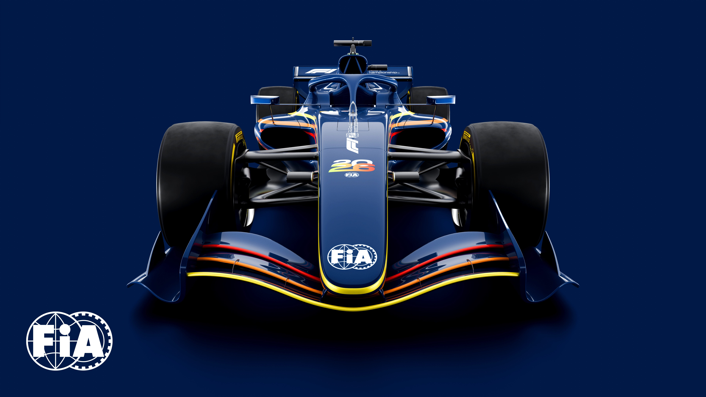

Te presentamos los 10 cambios que debes conocer de cara a la próxima temporada de Fórmula 1 en
2026.
1- Adiós al DRS, bienvenido el “Active Aero”
El sistema que los pilotos presionaban en las rectas para abrir el alerón trasero y adelantar
más fácil ya no existirá. Ahora los autos tendrán alerones que se mueven tanto adelante como
atrás, con dos modos: uno para ir rápido en curvas y otro para volar en las rectas. La
diferencia es que todos pueden usarlo cuando quieran, no solo cuando están persiguiendo a
alguien.
2- Los motores serán mitad eléctricos
Hasta ahora, los motores de F1 funcionaban mayormente con gasolina y solo un poco de
electricidad (80%-20%). En 2026 eso cambia radicalmente: la potencia será 50% del motor
tradicional y 50% eléctrica. Seguirán siendo autos de más de 1,000 caballos de fuerza, pero
ahora con el doble de energía limpia.
3- Combustible 100% sostenible
Se acabó la gasolina convencional en F1. A partir de 2026, todos los equipos correrán con
combustible creado a partir del dióxido de carbono extraído de desechos o incluso capturado del
aire. La gran apuesta de la F1 por demostrar que el deporte motor puede existir manteniendo su
responsabilidad con el medio ambiente.
4- Modelos más pequeños y ligeros
Los monoplazas actuales son tanques de guerra con ruedas: enormes, pesados y difíciles de
maniobrar en circuitos estrechos. Los nuevos modelos serán 30 kilos más livianos, 10 centímetros
más angostos y 20 centímetros más cortos. La idea es que sean más fáciles de maniobrar, lo que
hará que las carreras sean más emocionantes.
Para lograr esto, eliminaron el MGU-H, un motor eléctrico que recuperaba energía del calor del
motor y que era la más cara, la más pesada y complicada de fabricar de cada unidad de potencia.
Su salida no solo abarata costos para los equipos, sino que también ayuda a que los autos sean
más livianos.
5- Cadillac entra como equipo número 11
Por primera vez desde 2016, la parrilla tendrá más de 10 equipos. Cadillac, la marca
estadounidense, se suma a la F1 con Checo Pérez y Valtteri Bottas como dupla de pilotos usando
motores Ferrari. Ahora tendremos 22 autos en pista, más acción y más posibilidades de ver
batallas a lo largo de cada carrera.
6- Red Bull fabricará su propio motor con Ford
Red Bull dejó de depender de otros fabricantes y ahora construirá sus propios motores junto a
Ford. Un movimiento arriesgado para una compañía que no tiene historia en la fabricación de
motores normales, menos de Fórmula 1, pero si les sale bien, podrían tener un buen paquete y
mantener a Max Verstappen dentro del equipo.
7- Honda se va con Aston Martin
Después de años motorizando a los equipos de Red Bull (ganando campeonatos con Max Verstappen),
Honda se muda exclusivamente a Aston Martin. Con Adrian Newey diseñando los autos y Honda
impulsando sus diseños, Aston Martin podría convertirse en el equipo sorpresa de 2026.
8- El límite presupuestario sube a $215 millones
Los equipos tenían un límite anual de $135 millones de dólares para gastar en la temporada. Con
todos los cambios de reglamento, la FIA subió ese límite a $215 millones de dólares. Suena a
mucho dinero extra, pero en realidad es para cubrir inflación y costos que antes no se contaban.
Así que no esperes ver a los equipos derrochando dinero en lujos innecesarios.
9- Madrid tendrá su Gran Premio
España tendrá dos carreras por primera vez en más de una década. Además de Barcelona, se suma un
circuito callejero en Madrid que promete ser uno de los eventos más espectaculares del
calendario. La entrada del Madrig viene con la salida de Imola, circuito que sale del calendario
después de cinco años de su regreso.
10- Más tests de pretemporada que nunca
Normalmente, los equipos tienen seis días para probar sus autos antes de que empiece la
temporada. En 2026 tendrán 11 días repartidos entre España (del 26 al 30 de enero) y Bahrein
(del 18 al 20 de febrero). Con tantos cambios técnicos, los equipos necesitarán más tiempo para
entender estos autos completamente nuevos, y los primeros que lo logren tendrán una ventaja
brutal.
